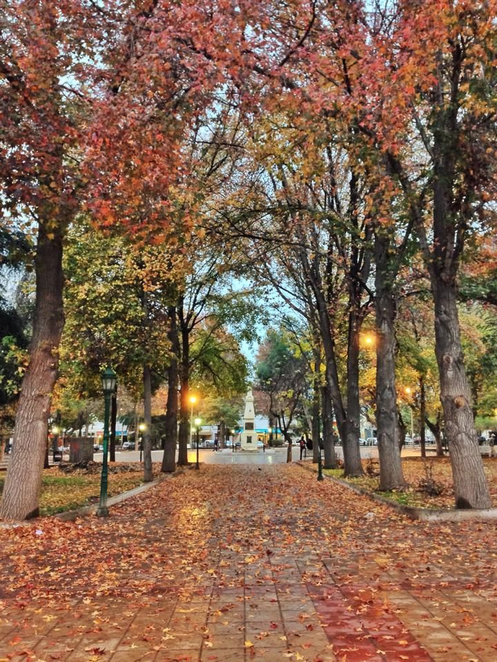
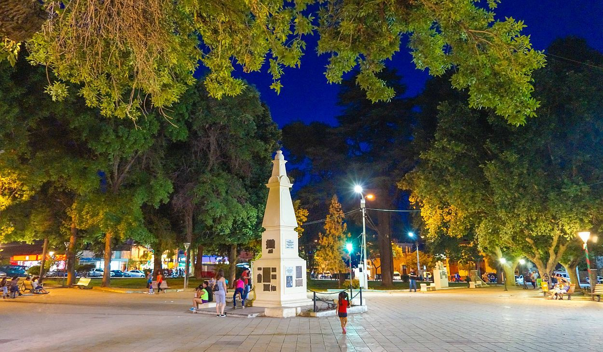

Plaza Principal
Fue fundada el 19 de febrero de 1715 por el español Domingo de Castro y Bazán,
inicialmente bajo el nombre de Villa Santa Rita, luego cambió a Villa Argentina y finalmente a Chilecito.

Particularmente, se destaca la plaza principal, llamada Caudillos Federales, con una frondosa arboleda y el
centro despejado. Esta es además, un sitio tradicional para la Bendición de Frutos que inaugura La Chaya en el
popular carnaval riojano, los febrero de cada año.
La ciudad se encuentra emplazada sobre un gran valle, al pie de la Sierra de Famatina, entre dicha Sierra y las
de Velasco. Dicha zona es una importante región turística y productiva, rodeada de extensos viñedos y olivares.

¿Como llegar a la Plaza Principal?